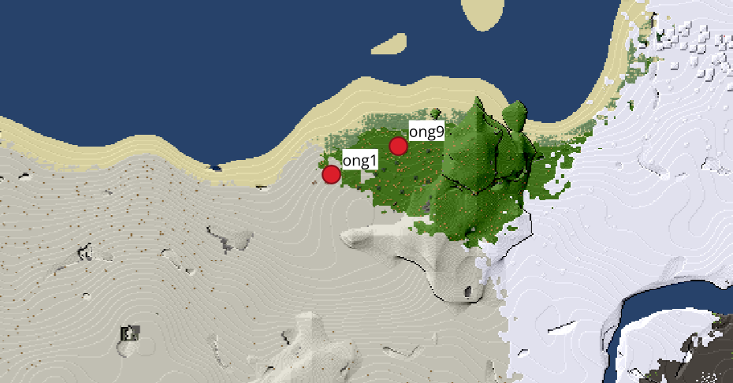

Ton navigateur ne supporte pas la vidéo.
PROJET LUANTI/MINETEST
2023-2025
Manager: 2024-2025
BUT : Avoir la position des joueurs en temps réel
(connecté sur un serveur distant donné et/ou local)

1ère place au prix de
La Meilleure Communication Étudiante
au Colloque International Game Evolution 2025
voir la certification ↑
Actions réalisés par la suite :
Création d'un ERP customisé : joueurs connectés, leurs inventaires, équipes, et leurs positions
Plusieurs mods : Attribution de rôles, possibilité de faire des annonces, de démarrer un chronomètre, et téléporter les joueurs vers soi
Écriture d'un article soumis au Colloque International Game Evolution 2025
DEMONSTRATION DE L'ERP
codé en LUA